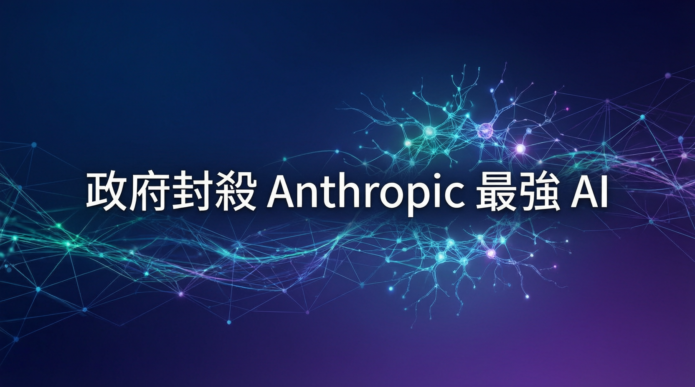

本次報告深入解析企業主動揭露風險評估後，如何意外觸發政府預防性管制措施，以及此決策對全球 AI 產業鏈的深遠影響。

本次報告聚焦於近期人工智能安全領域的重大政策轉向。數據顯示，Anthropic 先前針對其尖端模型發布的風險評估，意外促使監管機構重新審視現行 AI 部署框架。研究指出，過度透明的安全警告在缺乏完善配套的情況下，可能加速政府採取防禦性管制措施。業界觀察認為，此舉標誌著科技企業在安全倡議與合規實務之間面臨新的平衡挑戰。
根據最新公開資訊，主管部門已正式介入並暫停該企業旗艦級模型的運作。專家分析，此項決定並非針對單一技術故障，而是基於整體系統性風險的預防性考量。在當前全球技術競賽白熱化的背景下，監管單位展現出更為審慎的態度。相關指令要求開發團隊在取得進一步安全認證前，暫停所有相關算力調度與模型迭代。
企業主動揭露安全風險雖符合倫理規範，但在現行法規尚未完備的環境下，可能無意間觸發監管機關的預防性干預。未來需在資訊公開與合規節奏之間建立更精準的溝通機制。
針對此次管制措施，數據分析顯示科技產業鏈將面臨短期陣痛與長期重組。供應鏈上下游企業已開始調整技術研發路線圖，以適應新的合規標準。
展望下一階段，技術演進與法規框架的協同將成為產業核心議題。本次事件凸顯了透明化報告與監管回應之間的動態關係。隨著合規標準逐步明確，產業預期將在安全驗證機制上投入更多研發資源。若能建立標準化的風險評估與分級監管制度，將有助於在創新速度與公共信任之間取得穩固平衡，推動人工智能技術邁向可持續發展的新紀元。